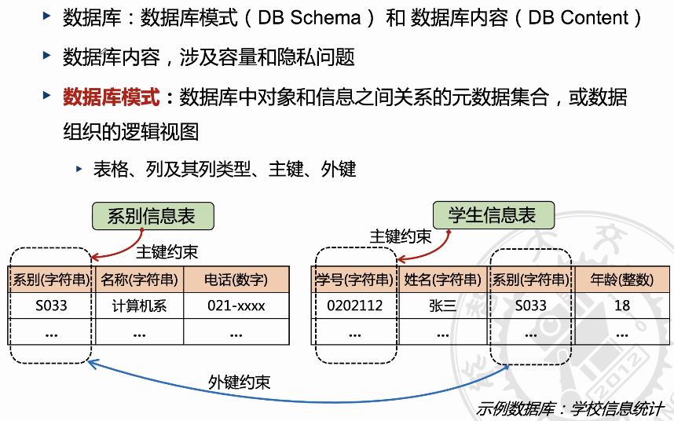

基于自然语言的数据库SQL语言生成笔记
Table of Contents
1. 目前已有的方法
1.1. 人工设计
1.2. 用户界面：基于规则
1.3. 模板匹配
1.4. 基于自然语言的查询

1.5. text to sql

即使是简单的自然语言语句也可能代表着复杂的任务。
2. 数据库的基本概念


SQL的介绍


prices[1,2,3,4,5] N=len(prices) max_ij=(0,0) max_num=prices[max_ij[1]]-prices[max_ij[0]] for i in range(N): for j in range(N): if j>i: new_max_num=prices[j]-prices[i] if new_max_num>max_num: max_num=new_max_num max_ij=(i,j)